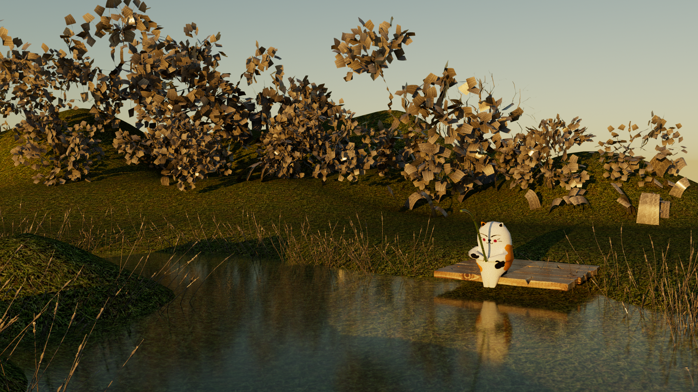
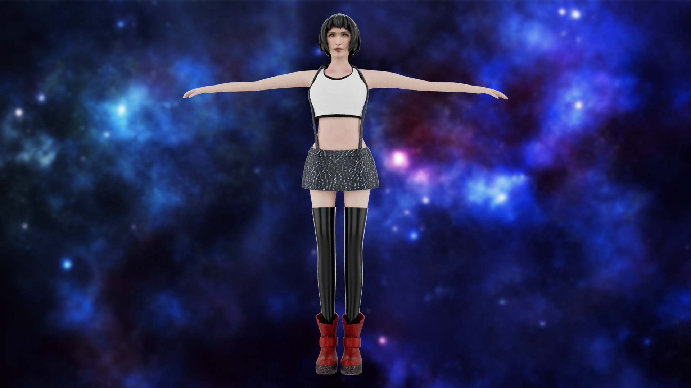
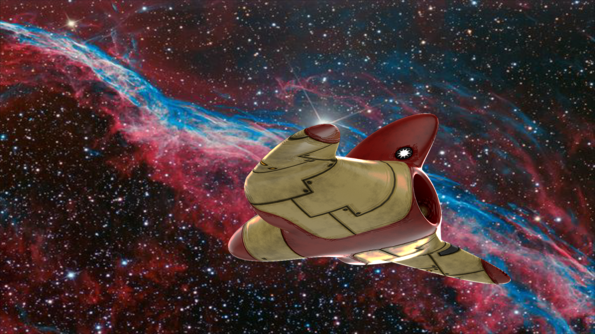
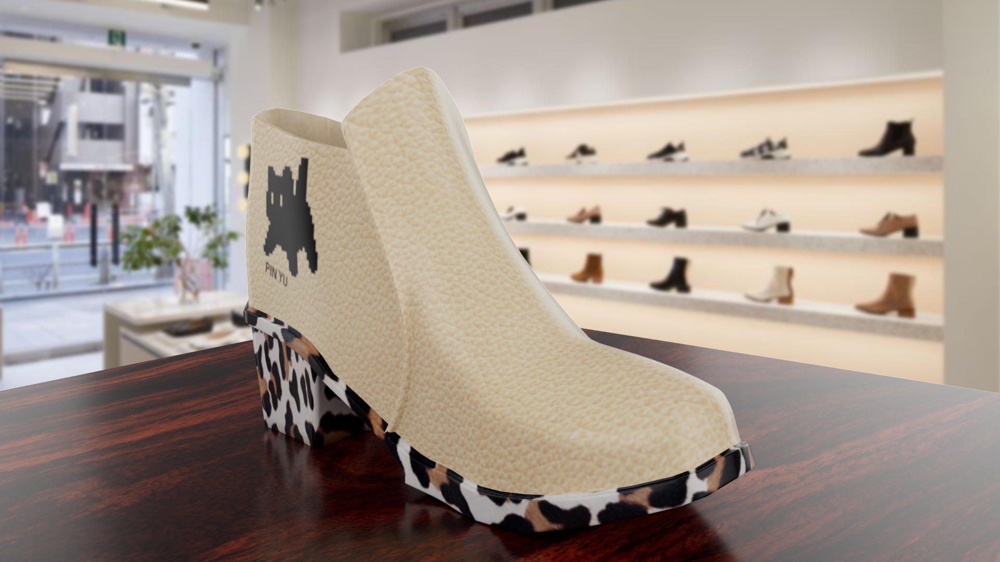
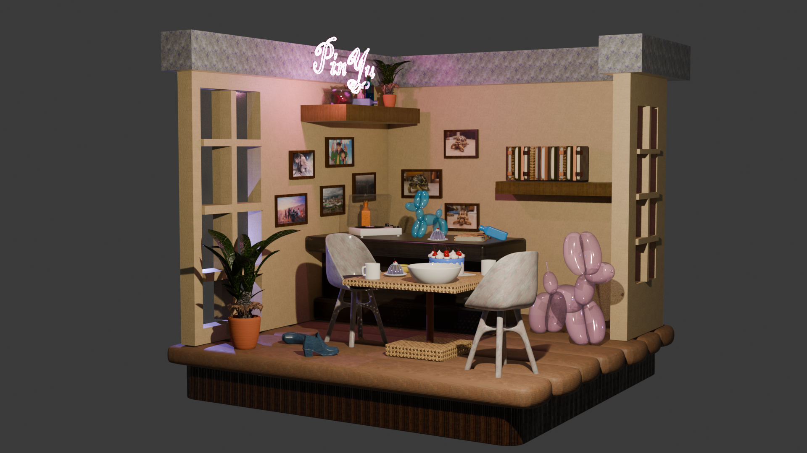
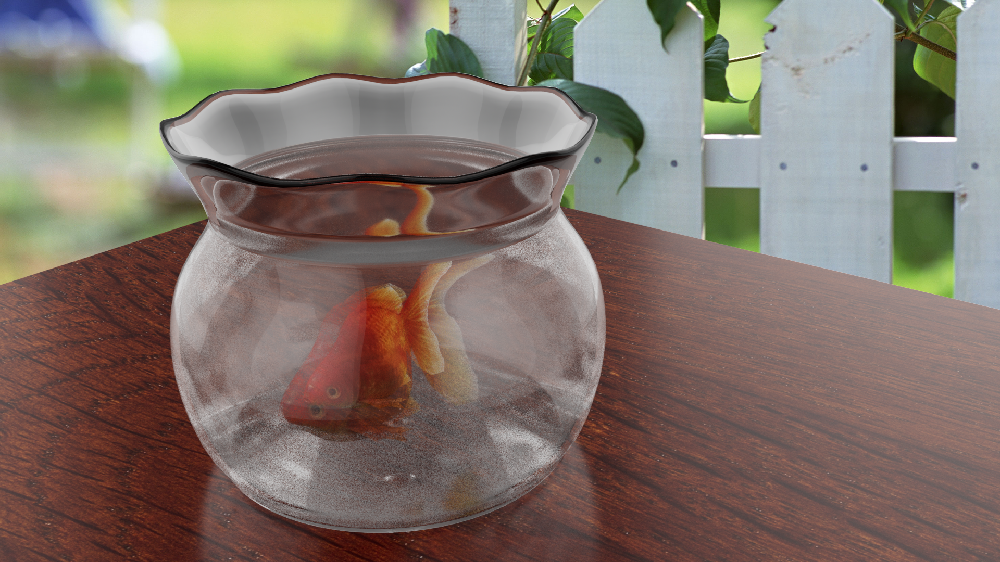
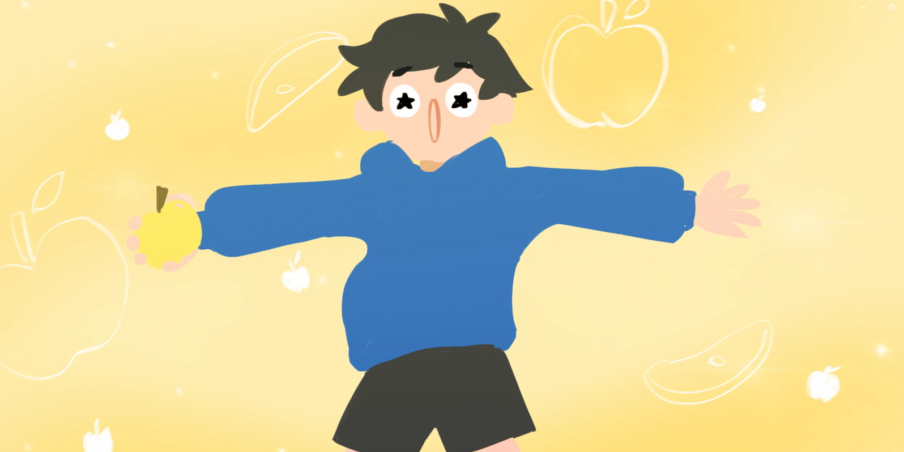

Fishing Cat
Maya建模，釣魚的貓，使用Maya的花草系統，製作出貓咪在湖邊釣魚的景象。
Hi, I’m Chen Pinyu. I’d like to share some images and videos of my work to give you a quick overview of my skills and creative direction. Please feel free to get in touch!
嗨，我是陳品妤。右邊放了我的 Portfolio Reels，下面我將用一些作品的圖片及影片讓您快速了解我的工作能力以及我的創作方向，也歡迎與我聯絡喔！
Click the categories below to view the works. 點擊下方分類以觀看不同作品。
Modeling, character animation, and environment design.
Visual effects, compositing experiments, motion graphics, and post-production.
Collaborative animation works, group projects, production process, and MV.
Profile, skills, contact information, and personal creative direction.
A collection of 3D works, including modeling, scene design, and character model.
簡單放了一些 3D 建模、角色動畫、與場景設計。

Maya建模，釣魚的貓，使用Maya的花草系統，製作出貓咪在湖邊釣魚的景象。

Maya角色建模，《最終幻想VII》內的角色Tifa，使用Maya的材質轉印，繪製Tifa的面部，以及鞋子的部分。

Maya建模，利用簡單的太空船建模，學習Maya的髮線貼圖與燈光的運用，最後輸出導進PS做背景合成。

Maya建模，學習Maya的鏡像建模，同時學習使用真實物件材質，做出擬真感。

Blender建模，學習使用blender做出一個完整的場景模型，並使用blender物理引擎，製作出麵條、調味料等模型。

Maya建模，學習使用curve去拉魚缸跟魚模型的外框，以及使用Maya的水與玻璃材質，練習控制玻璃與水的折射。
Visual effects and compositing work, encompassing After Effects projects, motion graphics, VFX, and short film editing.
視覺特效與合成作品，涵蓋Ae專案、MG、VFX、CGI特效及短片剪輯。

Ae motion graphic 練習，使用FF7本身的地圖與角色，製作虛線的動態，以及發散的線條。

學習 Blender tracking，使用之前做的角色建模，合成進空無一人的民權西路捷運站，配上一些簡單的 Ae調色，並配上夢核感的音樂，做出來的CGI短片。

Ae VFX，使用 Ae 的 3D camera 製作出圖片堆疊的方塊，拍攝綠幕素材去背，並合成上去，製作出致敬Ariana Grande的作品。

Ae tarcking，學習使用 Ae追蹤做出卡牌位移，簡單調色讓卡牌符合現實色調。

學習Ae的位移動態，調整動態曲線，讓彈跳更加自然，以及使用一些溶解的作法，讓整體畫面更加水潤、輕鬆。

學習Ae變速，製造出人有快速移動的能力，最後用PS做出一份簡單的新聞版面，剪出一個小短片。
Presented below are two major group projects and several music videos, along with a description of my specific roles in each.
以下擺放兩個四人的團體專案，以及一些MV作品，並說明我在這幾個專案內擔任的工作內容。

Driven by curiosity, a playful and innocent plastic bag encounters a baby sea turtle. What kind of spark will fly between them, and what story will unfold?
The film aims to convey the importance of simple eco-friendly actions—specifically reuse—so that all creatures sharing our world can enjoy a clean, safe home where we can all live happily. By personifying the plastic bag and transforming it from a mere sculpture into the turtle's friend, we communicate our core message in a whimsical, child-friendly way, showing everyone that a simple act can truly change our lives.
I served as the team leader for this project; my responsibilities included writing the script during pre-production, handling compositing and editing in post-production, and providing technical support throughout the production process. The film was also screened at the Kaohsiung Vision Get Wild (VGW) festival.
天真貪玩的塑膠袋，在好奇心的驅使下，遇見了小海龜。他們會擦出什麼樣的火花？又會帶來怎樣的故事呢？
本片的主旨亦在傳遞透過簡單的環保回收再利用的舉動，讓共享這個世界生存空間的生靈都能夠有乾淨且安全的家園供大家快樂的生活。我們用擬人的方式讓我們的核心概念用更童趣的方式傳遞給大眾，讓曾經是小海龜危害的塑膠袋也能搖身一變成為他的朋友，也藉此想讓大家知道只要一個簡單的舉動也能改變你我的生活。
我在這個組別中扮演組長的角色，製作的部分我主要做的是前製劇本的撰寫、後製合成剪輯，以及製作中期的技術支援。這部片也有在高雄放視大賞上進行展出。

The film is set in a "social media buffet" where patrons dine—scrolling through social media feeds. A warning sign reminds everyone that they are responsible for selecting what they consume; the establishment accepts no liability. Perhaps the customers overlook this warning, and as they binge-consume content, the atmosphere takes an increasingly eerie turn.
The film aims to highlight the importance of media literacy. We use the buffet as a metaphor for the online world, likening the act of filtering out "filth" to choose only a clean apple to the practice of media literacy.
I also served as the team leader for this project. My production responsibilities included scene modeling as well as post-production compositing and editing, while my team members handled the hand-drawn illustrations.
在一間社群媒體自助餐廳，有許多人在此用餐（滑社群媒體），但是餐廳的警告標語提醒著大家吃下去的東西要大家自己進行挑選，餐廳並不負責，也許是前來的顧客沒有注意到，隨著大家暴飲暴食，氣氛也逐漸詭異…。
本片主旨為呼籲眾人重視媒體識讀的重要性，我們用自助餐廳擬作網路世界，以挑出髒東西，只吃乾淨的蘋果，比擬媒體識讀。
我在這個組別中同樣扮演組長的角色，製作的部分我負責做場景建模，以及後製合成剪輯，手繪的部分是由我的組員們繪製。

我們改寫翻唱了草蜢的失戀陣線聯盟，用一部 MV 拍出幾個大學生生活的酸甜苦辣，後面放了一些我們在拍這部 MV 的花絮，我在這部 MV 裡擔任劇本、攝影與剪輯的部分。音樂製作的部分是我和我的組員共同重新演藝。

說到我是一個怎麼樣的人，不得不說的一環就是我對自己蠻有自信的，因此我請我的姑姑陪我一起拍了這樣一個 MV 來和大家分享我的生活狀態。這部片的製作全權我自己一人處理，除了攝影師的部分是由我姑姑掌鏡。

這部片是我在升大學的暑假閒暇之餘做的，製作剪輯同樣由我全權負責，我請我的高中朋友作為本片的女主角，想要講述女性在失戀後，從消極到振作的過程，我也特別選擇使用我們淡水的風景作為本片的拍攝地。

Hi, my name is Chen Pin-Yu, and you can also call me Pinky.
I’m from Tamsui, and I’m an optimistic and expressive person who loves sharing ideas.
I enjoy movies, music, games, manga, and creating videos and animations.
To me, animation is a way to tell stories, express emotions, and bring imagination to life.
I hope to create animated works that allow more people to feel the charm of stories and characters.
謝謝你們看到這裡！大家好！我是陳品妤，也可以叫我魚丸或品妤。
我來自淡水，是一個大部分時間樂觀開朗、情緒豐富，也很愛說話的人。
平常我喜歡看電影、聽音樂、玩遊戲，看書，也熱愛蒐集動漫漫畫。
我特別喜歡透過影像、MV 和動畫，把腦中天馬行空的想法變成可以被看見的作品。
對我來說，動畫不只是興趣，更是一種能說故事、表達情感，也讓我持續追夢的方式。
希望未來能用自己的動畫作品，讓更多人感受到故事和角色的魅力。